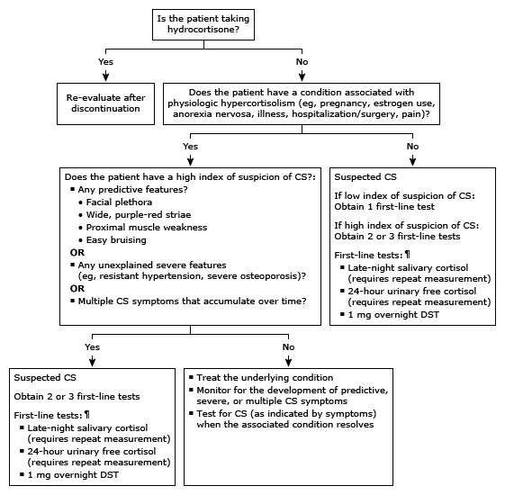

Initial evaluation of high serum cortisol in adults*

This algorithm is intended for use with additional UpToDate content on CS.
CS: Cushing syndrome; DST: dexamethasone suppression test. * Serum cortisol concentrations are higher in the early morning (approximately 6 AM), ranging from 10 to 20 mcg/dL (275 to 555 nmol/L), and lower in the afternoon, with 4 PM values ranging from 2 to 14 mcg/dL (55 to 386 nmol/L). Interpretation of a specific abnormal test result should be based upon the reference range reported with that result. ¶ Refer to additional UpToDate content on establishing the diagnosis of CS for the diagnostic criteria for each first-line test.